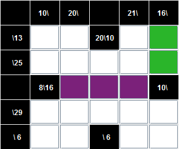
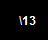
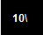

Il y a trois règles à connaître pour jouer au jeu de kakuro :
- On ne peut remplir une case qu'avec un chiffre compris entre 1 et 9.
- Dans un bloc on ne trouve jamais deux fois le même chiffre. Donc un bloc ne peut pas faire plus de neuf cases.
- La somme des chiffres du bloc doit être égale au nombre inscrit (s'il y en a un) dans la case noire correspondante.
Qu'est ce qu'un "bloc"?
Un bloc est un ensemble de cases blanches comprises entre deux cases noires ou entre une case noire et une extrémité de la grille.
Par exemple: les cases violettes forment un bloc en ligne et les cases vertes un bloc en colonne.

Comment lire une case noire?
Une case noire peut contenir zéro, une ou deux informations : à la droite de la diagonale on trouve le total du bloc en ligne et à sa gauche le total du bloc en colonne
- Le total du bloc de droite
- Le total du bloc de dessous
- Les deux totaux
- Aucune information
Petit exemple de résolution :
 Ici on a 3 = 2+1 or 4 ne peut être écrit 2+2 (car on ne peut avoir 2 même chiffres dans un bloc) donc on l'écrira 3+1. On en déduit qu'il y a un 1 dans la première case, un 3 dans la seconde, un 2 dans la troisieme et un 1 dans la dernière.
Ici on a 3 = 2+1 or 4 ne peut être écrit 2+2 (car on ne peut avoir 2 même chiffres dans un bloc) donc on l'écrira 3+1. On en déduit qu'il y a un 1 dans la première case, un 3 dans la seconde, un 2 dans la troisieme et un 1 dans la dernière.